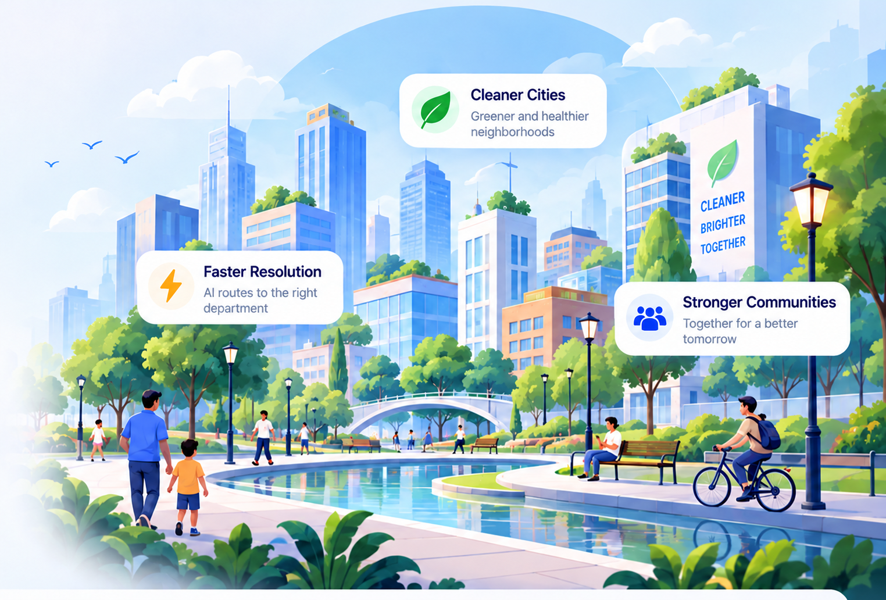

AI Powered
Department routing and priority classification.
Report civic issues, follow complaint progress, and stay connected with the department handling your case. CivicFlow combines multilingual support, AI-assisted routing, priority intelligence and transparent tracking in one public-service workflow.

Department routing and priority classification.
Indian-language grievance submission support.
Track every stage of the complaint lifecycle.
Related reports grouped with privacy preserved.
Live National Dashboard
Figures update continuously as complaints are lodged, classified and resolved across the country.
0
Complaints
0
Resolved
0
Pending Cases
0
Departments Active
PUBLIC ACCOUNTABILITY
Aggregated results for the last 90 days. Resolution time uses cases with recorded assignment and resolution timestamps; open overdue cases use the same priority-based SLA targets as department operations.
| District / State | Department | Cases | Resolved | Median resolution | Open overdue | Resolved within SLA |
|---|---|---|---|---|---|---|
| Loading… | ||||||
Groups with fewer than five complaints are hidden for privacy. This is a transparency summary, not an official government performance audit.
HOW CIVICFLOW WORKS
From submitting a complaint to getting it resolved, CivicFlow keeps the entire process simple, transparent, and easy to track.
Describe your issue in your own words and submit your complaint quickly through a simple and accessible form.
Your complaint is intelligently directed to the department responsible for handling your issue.
Stay informed with clear status updates as your complaint moves from submission to assignment and resolution.
Follow your complaint until the concerned department takes action and your issue reaches resolution.
National Command Center
Explore approximate complaint activity across India. Public map markers group reports by locality and do not show individual complaint details.
REPORT CIVIC ISSUES
Tell the right team what is happening in your neighbourhood. Choose the category that best describes your issue when submitting.
Water interruptions, leaks and water quality concerns.
Hover or tap to see department activityWaste collection, drainage and sanitation problems.
Hover or tap to see department activityPotholes, damaged roads and transport infrastructure.
Hover or tap to see department activityPower outages, streetlight failures and electrical hazards.
Hover or tap to see department activityHealthcare access and public health service concerns.
Hover or tap to see department activityPublic safety, policing and community security.
Hover or tap to see department activitySchool facilities, teachers and education services.
Hover or tap to see department activityCivic facilities, local infrastructure and municipal services.
Hover or tap to see department activityHover, focus, or tap a department card to see its recorded complaints. Counts reflect the live database, not resolution rates.
HOW IT WORKS
From the moment a citizen submits a grievance to the moment it's resolved — fully tracked and transparent.
Citizen lodges a grievance through CivicFlow in their own language.
The complaint is analysed and its language, department and priority are identified automatically.
The complaint is routed to the appropriate department for action.
The assigned officer reviews the complaint, updates its status and takes appropriate action.
The citizen receives an update and can track the completed resolution.
ACCESS FOR EVERY CITIZEN
Write complaints in your preferred language. CivicFlow preserves the original text and attempts an English processing copy for department staff.
Voice input depends on browser and language support. When you record your voice, Listen Back lets you hear your original recording before submission.
Original-language complaint
Translation for department processing, where available
Speech recognition and translation quality can vary by language.COMMUNITY INCIDENTS
Related complaint reports can reveal recurring civic problems. CivicFlow checks complaint meaning to suggest similarities, while location-based incident summaries help departments identify affected areas.
A similarity score is not proof that two complaints describe the same incident. Different issues—such as dirty water and no water supply—should remain distinguishable.
Individual citizen reports
Related-issue review and area-level insights
Citizen identities and private complaint details should not be exposed publicly.TRANSPARENCY & ACCOUNTABILITY
A complaint is more than a submission. You should be able to understand its progress and respond to the outcome.
Follow status changes and see when your complaint reaches the responsible team.
Department workflows record assignments, actions and progress updates.
Confirm whether the issue was actually resolved, or request another review within the available dispute process.
Share relevant supporting material. Avoid unnecessary personal information and review the complaint before submission.
HOW TO USE CIVICFLOW
Watch how a citizen moves through CivicFlow, from login to complaint submission.
Click the CivicFlow AI icon to visit the portal.
Enter your details and click Login.
Click Lodge Complaint from your dashboard.
Type your complaint, then click Submit.
Your complaint is now being processed.
Track your complaint anytime from My Complaints.
Frequently Asked
Our department prediction model reads the complaint text, uses features learned from labelled civic complaint data and assigns it to the most relevant department with a confidence score. Every routing decision can be reviewed by a human officer.
The complaint form includes Indian-language choices for typed text. Translation and voice recognition depend on the language and the available services; voice may not work in every browser or language.
The priority model weighs public-safety risk, urgency language, complaint history and location density to flag critical cases, which are surfaced at the top of an officer's queue immediately.
Yes. Every complaint receives a unique tracking ID the moment it's submitted, and its status moves through Submitted, Classified, Assigned, Under Review and Resolved in real time.
CivicFlow has role-based complaint workflows. Avoid sharing unnecessary personal information, and refer to the platform administrator for current storage, retention and security practices.
Real feedback from registered CivicFlow users.
Loading user feedback...